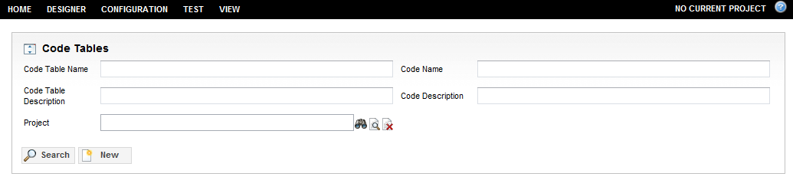
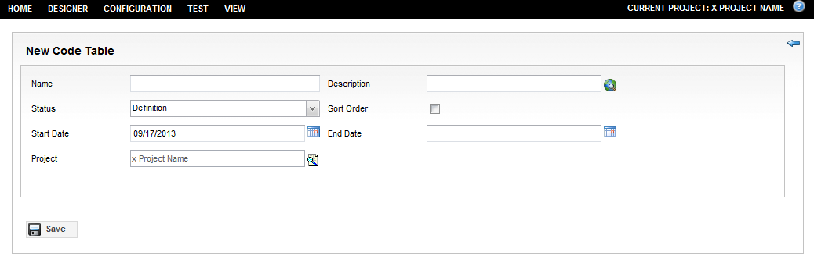
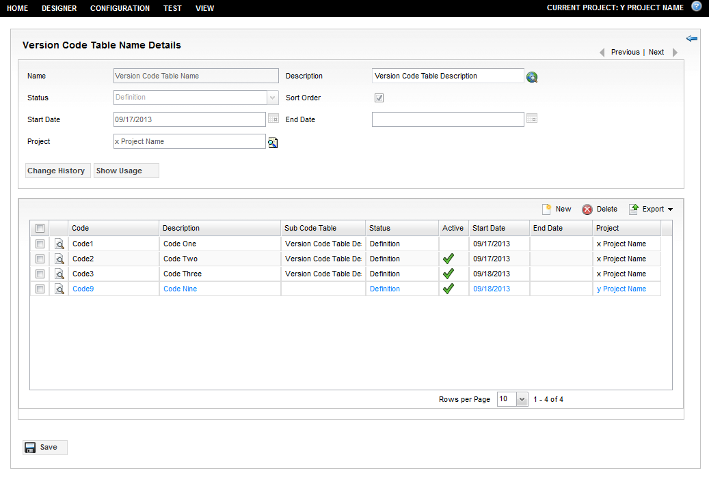
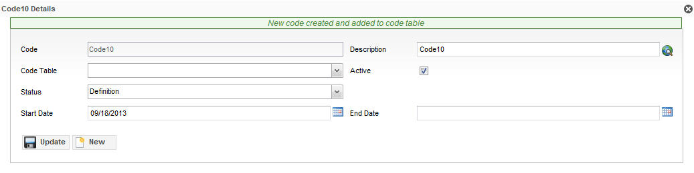

Add, Edit, and Delete Code Tables
This section describes the following:
Add a New Code Table
To add a code table, complete these steps:
- From the Code Tables page, click the New button.

- The New Code Table page appears.

Enter the following fields, which vary between versioned and non-versioned code tables:
| Field |
Description |
| Name |
This field is mandatory and it must be a unique identifier of a code table in the current application context. |
| Description |
The description of the code table. This field is optional. |
| Active |
Defines whether the code table is active. This field is optional and is used by non-version code tables. |
| Sort Order |
Allows to re-order codes inside the table. This field is optional. |
| Project |
This field is used by version code tables. It identifies the project associated with the code table. |
| Status |
This field is used by version code tables and is mandatory. It identifies the status (designated life cycle states) of the code table.
It replaces the Active field. |
| Start Date |
This field is used by version code tables and is mandatory.
It identifies the effective date of the code table and must be less than or equal to the End Date. |
| End Date |
This field is used by version code table, but is optional.
It identifies when a code table is no longer effective. |
Notes:
- If a project is open, the code table is created as a versioned code table. The Project field of the code table is automatically set to the opened project and cannot be changed. The Status field is set to Definition if this status exists in the status list and the Start Date is set to the current date.
- A code table is created as either a versioned code table or a non-versioned code table. Once you have created a code table, the version type cannot be changed.
Edit an Existing Code Table
To edit an existing code table, follow these steps:
- From the code table search results, click the Details icon (magnifying glass) next to Name of the code table or double-click on the code table row. By default, code table details are in read-only mode.
- From the code details page, click the Edit button.
- Make the pertinent changes to your code table.
Notes:
- Once a code table is created, the Name of the code table cannot be changed. All other code table detail fields are editable. See the restrictions section that follows.
- If the Sort Order field is checked, you can re-arrange the order of the code list by selecting code rows, and then dragging and dropping them to the desired position.
- For non-versioned code tables only, in edit mode, the codes properties can be changed directly in the code row field in the code list.
- When you have finished making your changes, click the Save button.

The following are restrictions when editing versioned code tables:
- The code table Status is set to Active. In this case, code table details remain read-only. However, codes can be edited, added, and deleted.
- The project of the code table is not opened (that is, either no project is open or a different project is opened). In this case, only the Description fields of the code table and codes can be changed.
- A project is open, but it is different from the project of the code table. In this case:
- It is allowed to add a new code that is associated with the currently opened project.
- Codes belonging to the opened project can be deleted. All other codes cannot be deleted.
- No project is open. In this case:
- Even in edit mode, the New code button is invisible. As a result, it is not allowed to add non-versioned codes to a versioned code table.
- Even in edit mode, the Delete code button is invisible. As a result, it is not allowed to delete codes outside of the code project.
Once your code table is in edit mode, the following actions can be performed on the codes of the code table:
Add a Code
To add a code, do the following:
- From the code table's Details page, click the New button.
- Enter the following information in the fields provided:
| Field |
Description |
| Code |
This field is mandatory and it must be a unique identifier of the code in the current code table. A code with whitespace is not accepted. |
| Description |
The description of the code. This field is optional. |
| (Sub) Code Table |
This field is optional. It can be used to reference another code table, such that all codes from the sub-table are treated as inherited in the current code table. |
| Active |
Defines whether the code is active. This field is optional. A code can be active if and only if the code table is active. |
| Status |
This field is used by version codes and is mandatory. It identifies the status (designated life cycle states) of the code.
It replaces the Active field. A code can be active if and only if the code table is active. |
| Start Date |
This field is used by version codes and is mandatory.
It identifies the effective date of the code and must be less than or equal to the End Date. |
| End Date |
This field is used by version codes, but is optional.
It identifies when a code is no longer effective. |
| Project |
This field is used by version codes. It identifies the project associated with the code. |
- After you have entered your code details, click the Add button to add the new code to the code table, but it does not automatically persist. You can click the New button to continue entering codes or close the dialog to return to code table form.

Notes:
- All newly added codes appear in blue font to indicate that they are not yet saved.
- For versioned code tables, the New code button is not available unless a project is open.
- Versioned code tables cannot contain non-versioned codes and vice-versa.
Edit a Code
To edit a code, complete these steps:
- From the code table's Delete page, click the Edit button, and proceed to either click the Details icon (magnifying glass) next to code Name field or double-click the code row.
- Make the pertinent changes.
Notes:
- The code name and project (for version codes) can never be changed.
- If the code table's Sort Order field is checked, you can re-arrange the order of the code list by selecting code rows, and then dragging and dropping it to the desired position.
- For non-versioned code tables only, in edit mode, the codes properties can be changed directly in the code row field in the code list.
- Click the Save button to save your changes.
Delete a Code
To delete a code or table, complete these steps:
- From the code table's Delete page, select the code row that you want to delete, and then click the Delete button.
Notes:
- For versioned code tables, the Delete code button is not available unless a project is open.
- If some or all selected codes cannot be deleted, the delete transaction is not performed and no codes are actually deleted. In this case, an exception message displays. Otherwise, all selected codes appear as grey and strike-through records to indicate that are marked for deletion.
- The selected code has been deleted.
Delete a Code Table
To delete a code tables, do the following:
- On the Code Tables page, select code table rows that you want to delete, and then click the Delete button.
Note: If some or all selected code tables cannot be deleted, the delete transaction is not performed and no code tables are actually deleted. In this case, an exception message displays. Otherwise, all selected code tables are permanently deleted along with their containing codes.
- The selected code table has been deleted.
The following are restrictions when deleting versioned code tables:
- Only those code tables that belong to the current opened project can be deleted.
- Only non-active code tables can be deleted.
|